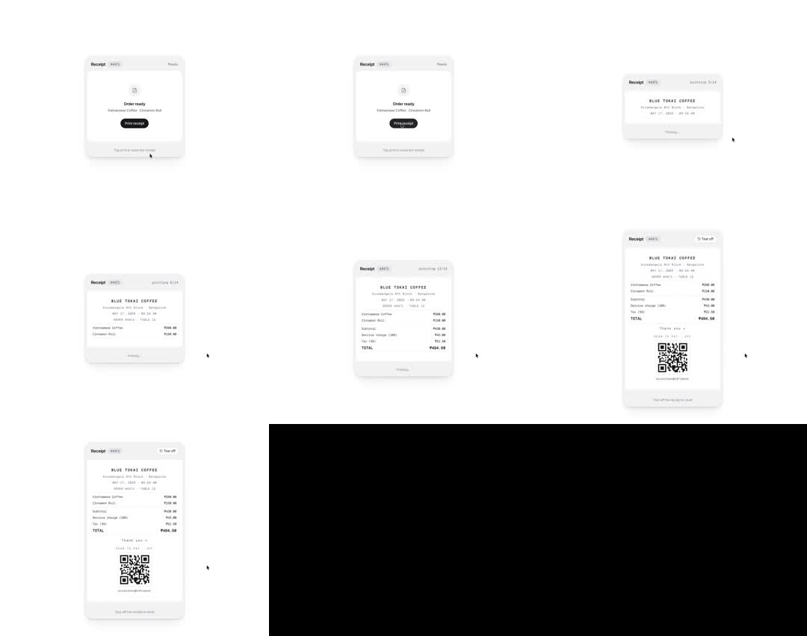

Print Receipt: an 'Order ready' card whose 'Print receipt' button makes a paper receipt physically emerge from the bottom of the card - the paper grows downward line by line (store header, items, totals, QR code) like a thermal printer, then a 'Tear off' action detaches it with a slight tilt.
Media
Frame-by-frame

0-18%
Card 'Receipt #6071': receipt icon, 'Order ready', order summary line, black 'Print receipt' button; caption 'Tap print to receive the receipt'.
18-30%
Button pressed: caption changes to 'Printing...'; a white paper strip slides out from under the card, 8px at first, jagged none.
30-60%
Paper extends progressively: 'BLUE TOKAI COFFEE' header types in, then address lines, item rows with prices, subtotal/tax/total - content appears top-down as the paper grows (clip-masked reveal).
60-85%
Full receipt hangs below: Thank-you line, 'SCAN TO PAY UPI', QR code; header button becomes 'Tear off'; 'printing 3/14' progress indicator during growth.
85-100%
Tear off: receipt detaches with a slight rotate and drop-fade; card resets.
Build prompt
Rebuild this interaction 1:1: "Print Receipt" - an "Order ready" card whose Print receipt button makes a paper receipt physically emerge from the bottom of the card: the paper grows downward line by line (store header, items, totals, QR code) like a thermal printer, then a "Tear off" action detaches it with a slight tilt.
## Integration
Integration: stack-agnostic spec - springs given as stiffness/damping, timed motions as duration + curve, canvas/shader notes are perf guidance only; map every value to your framework and animation library of choice.
## Scene
Card "Receipt #6071": receipt icon, "Order ready", order summary line, black "Print receipt" button, caption "Tap print to receive the receipt". The receipt: "BLUE TOKAI COFFEE" header, address lines, item rows with prices, subtotal/tax/total, thank-you line, "SCAN TO PAY UPI" + QR code. Mono type, thermal-printer look.
## Motion spec
Pattern: staged print sequence + tear.
- Print click: caption swaps to "Printing..."; a white paper strip slides out from under the card (8px at first).
- Feed (~2.5s total): paper extends with a linear feed plus tiny jitter steps (thermal printer feel); content reveals top-down, clip-masked, line by line (~120ms stagger); a "printing 3/14" progress indicator counts.
- Full receipt hangs below; the header button morphs to "Tear off" (200ms text swap).
- Tear off: receipt detaches with a slight rotate (~4deg) and drop-fade (350ms ease-in); card resets.
## Calibration
- The feed is linear with micro-jitters (small stepped pauses) - smooth easing reads as a UI drawer, jittery feed reads as a printer.
- Line stagger ~120ms; the eye should be able to follow the printing head.
- Tear 350ms ease-in with tilt: paper falls, it doesn't vanish.
## Reduced motion
Receipt fades in fully formed (200ms); tear is a 150ms fade.
## Don't miss
- Content is revealed by the growing paper (clip mask), not fading in place - the paper edge is the reveal line.
- The "printing 3/14" counter is the thermal-printer realism cue.
- Mono type and ragged thermal layout for the receipt; no card styling on the paper.
Mechanics
trigger
Print receipt click; Tear off click
elements
order card, paper strip (height-animated, clip-masked), receipt content (staggered lines), progress indicator